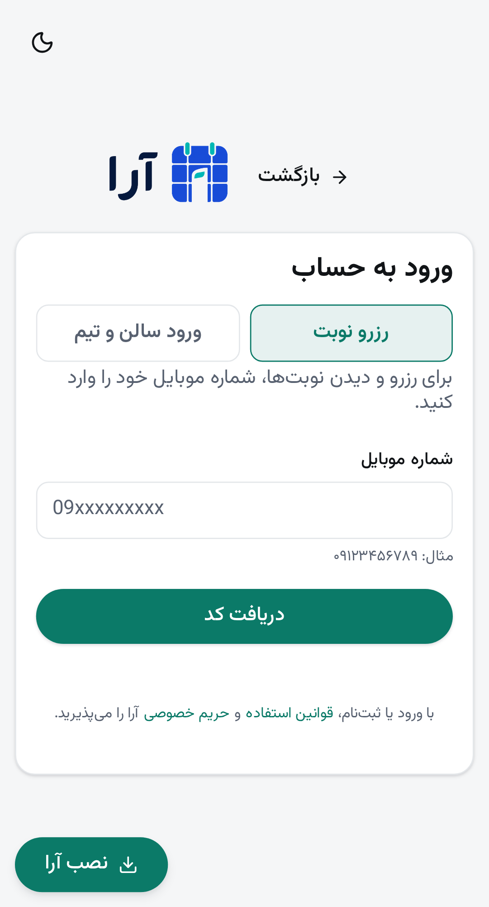
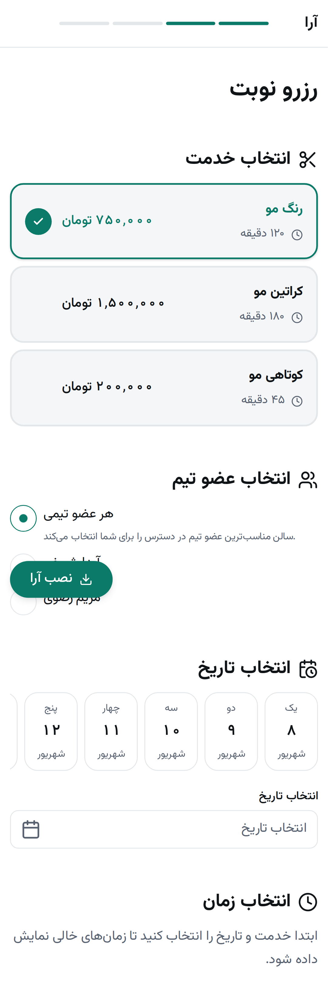
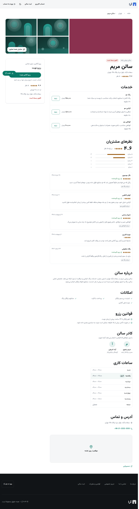
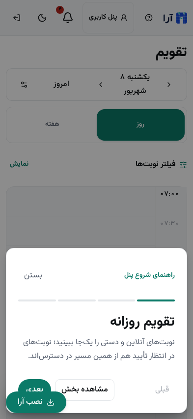
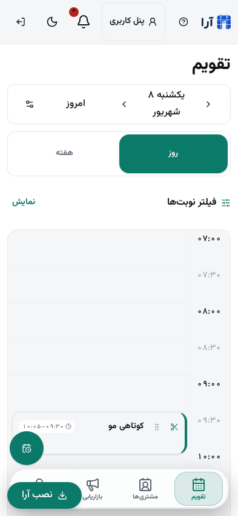
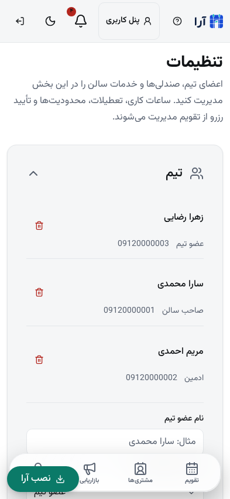
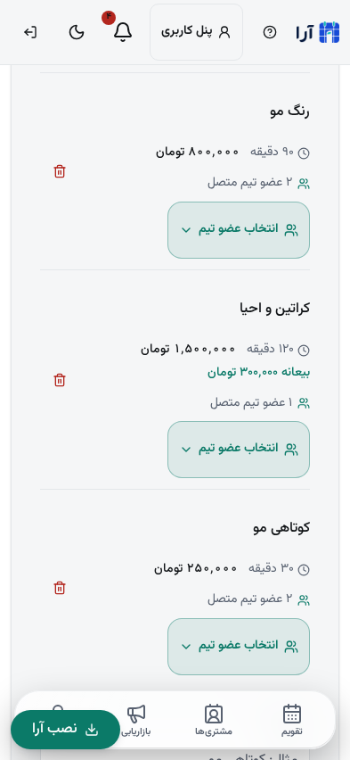
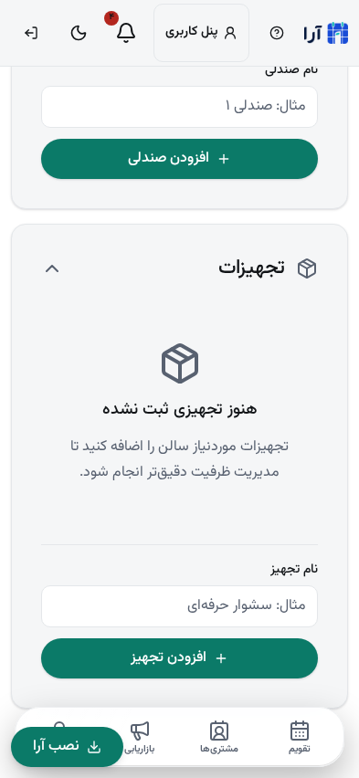
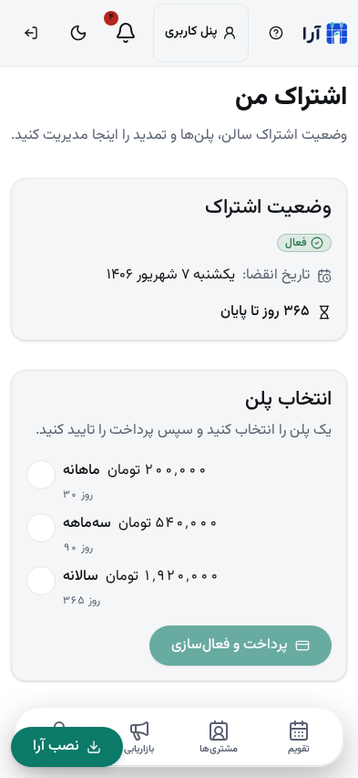
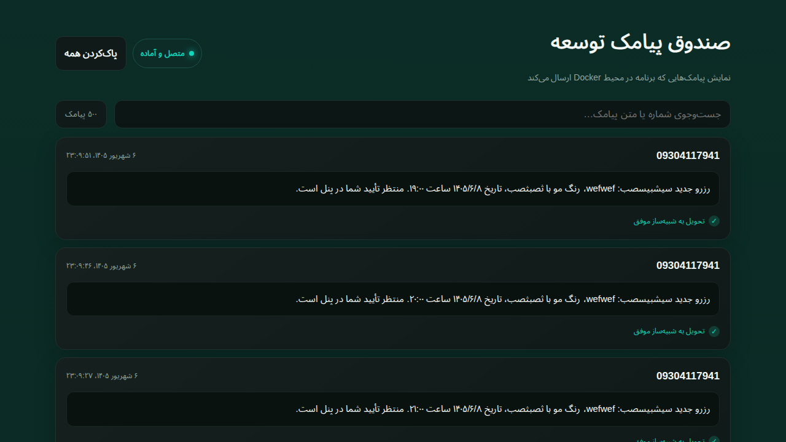

ورود با context درست
شمارهی یک نفر میتواند در چند سالن عضو باشد. بعد از OTP، context سالنها نمایش داده میشود و امکان جابهجایی سالن بدون خروج وجود دارد.
قابلیتهای درخواستی برای ورود، ثبت سالن، رزرو، تقویم ایرانی، مدیریت تیم، پیامک، بیعانه و تغییر زمان نوبت تکمیل و از مسیرهای اصلی محصول بررسی شدند.
ورود مشتری و سالن از هم جداست، رزرو مستقیم با لینک یا QR انجام میشود و صفحههای بدون داده، وعدهی ساختگی نشان نمیدهند.
شمارهی یک نفر میتواند در چند سالن عضو باشد. بعد از OTP، context سالنها نمایش داده میشود و امکان جابهجایی سالن بدون خروج وجود دارد.
در شهر یا دستهای که هنوز دادهی واقعی ندارد، پیام «فهرست آماده نیست» و لینک رزرو مستقیم یا ورود مشتری نمایش داده میشود.
انتخاب چند حوزهی کاری، افزودن خدمتهای پیشنهادی یا سفارشی، صفحهبندی، شماره در پایان مسیر و اسکرول واحد با دکمههای ثابت.
خدمت، عضو تیم، تاریخ و زمان در یک مسیر کماصطکاک قرار گرفتهاند؛ همهی مبلغهای قابل مشاهده با تومان نمایش داده میشوند.



راهنمای بار اول، صف تأیید نزدیک ابتدای تقویم و bottom navigation باعث میشوند کار مهم زیر صفحه پنهان نماند.






در موبایل، pending approval قبل از محتوای تقویم میآید؛ در حالت نیاز، دکمهی شناور کمجا کنار صفحه تعداد درخواستها را نشان میدهد و با لمس آن کاربر مستقیم به صف میرود.
جهت اسکرول اصلی صفحهها با shell هماهنگ است، scrollbar در سمت راست قرار دارد و ناحیههای داخلی فقط جایی اسکرول میگیرند که واقعاً لازم باشد.
استپهای هدر در مرکز هندسی قرار گرفتهاند؛ آیکون بازگشت در RTL به سمت راست اشاره میکند و بازگشت مرحلهی اول داخل onboarding است.
واحد ذخیرهسازی همچنان ریال است، اما سطح محصول برای جلوگیری از سوءبرداشت تومان را نشان میدهد.
کارت خدمت، پروفایل سالن، رسید بیعانه، تراکنش، تحلیل، اشتراک و فرم ثبت سالن با formatter واحد به تومان تبدیل میشوند.
مبلغ ثابت، درصدی یا پرداخت نقدی پشتیبانی میشود. پرداخت نقدی رزرو را بیجهت در hold درگاه قرار نمیدهد.
کدهای API به پیام فارسی قابل اقدام نگاشت شدهاند؛ خطای مدت متغیر، تداخل زمان، اشتراک منقضی و دسترسی هرکدام علت مشخص دارند.
مشکل اختلاف ساعت برطرف شده: زمان API به منطقهی زمانی سالن/تهران تبدیل میشود، نه اینکه timestamp خام در متن پیامک چاپ شود.
برای دیدن پیامکهای dev در محیط فعلی: http://localhost:8025/
مسیر ارسال بر اساس خدمت میتواند به عضو مسئول تأیید برسد؛ اگر شمارهی او قابل استفاده نباشد، مالک فعال سالن fallback میشود. دعوت عضو تیم نیز SMS جداگانه دارد.

هیچ تغییر زمانی بدون بررسی زمان واقعی و تأیید نقش مربوط ثبت نمیشود.
| بازیگر | رفتار | حفاظت |
|---|---|---|
| مشتری | زمان جدید را انتخاب میکند؛ قبل از ارسال، خلاصه و تأیید نهایی میبیند. | زمان قبلی تا موفقیت عملیات حفظ میشود؛ زمان گذشته یا زمان جدیدی که رسیده باشد رد میشود. |
| سالندار / عضو تیم مجاز | ابتدا دیالوگ نهایی با نام مشتری، خدمت و زمان فعلی؛ سپس پیشنهاد زمان جدید ثبت میشود. | تداخل، مالکیت سالن، مجوز نقش و startAt > now در سرور بررسی میشود. |
| مشتری پس از پیشنهاد سالن | پیامک میگیرد و در پنل یکی از «تأیید زمان جدید» یا «رد زمان جدید» را انتخاب میکند. | تا تأیید مشتری، زمان قبلی قطعی میماند؛ رد کردن پیشنهاد نوبت را به زمان قبلی برمیگرداند. |
CRUD به سطح واقعی مدلها نزدیک شده و حذف، برگشتپذیر و tenant-safe است.
خروجیهای زیر از اجرای واقعی پروژه در محیط توسعه ثبت شدهاند.
نکتهی انتشار: build با host پیشفرض https://example.ir هشدار canonical میدهد؛ پیش از انتشار، مقدار واقعی VITE_SITE_ORIGIN را تنظیم کنید.